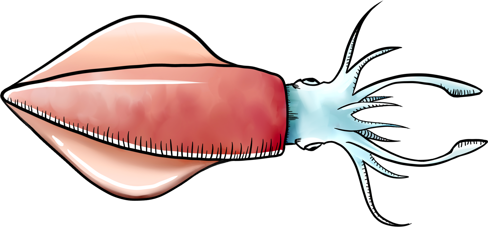
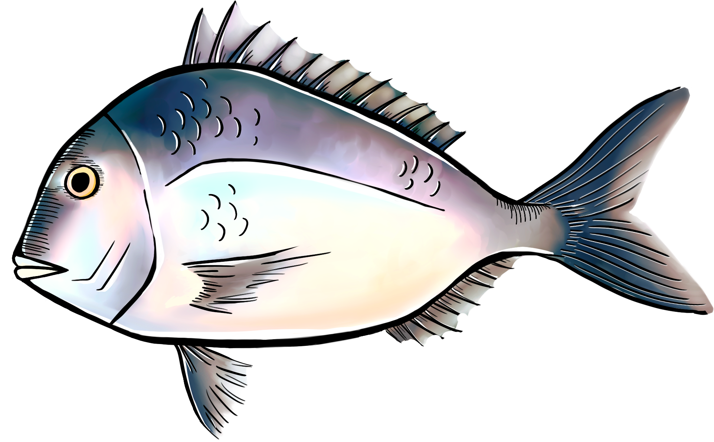
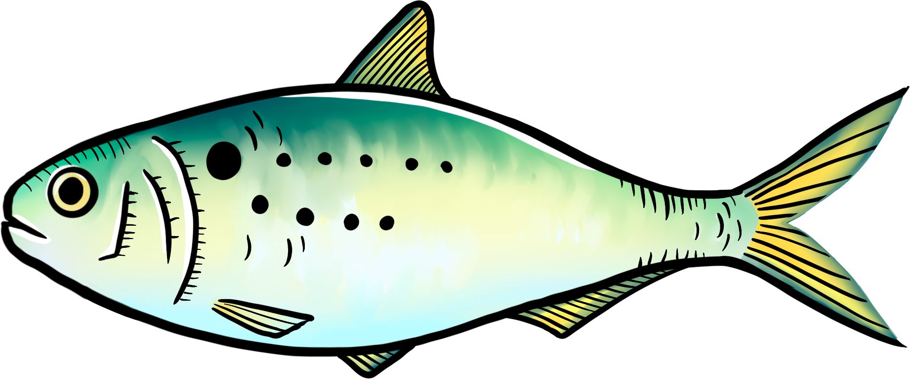

Long Island waters boast 47 species of edible fish, shellfish, and crustaceans,
with strict seasonal limits ensuring sustainable harvesting.
text05
In 2022, the top species landed by weight in New York were squid, porgy, fluke, clam, and bunker.
However, these local catches starkly contrast with the top five most-consumed seafood species in the
U.S. in 2021—shrimp, tuna, and tilapia—most of which are imported.
This highlights a paradox: while local fish, such as porgy, is highly abundant locally, it remains
undervalued and rarely consumed,
underscoring the disconnect between regional seafood production and national consumption trends.
Fishing regulations are carefully tailored to ensure sustainability,
with different rules applied to various species and fishing activities.
For each type of fish, strict fishery management dictates
specific practices for commercial and recreational fishing, as well as harvest methods.
text07
For example porgy is sustainably managed and responsibly harvested under U.S. regulations.
75 percent of commercial porgy landings are caught with otter trawls.
It requires that Vessels fishing must have a minimum mesh size of 5-inch diamond mesh applied throughout
the
codend for at least 75 continuous meshes forward of the terminus of the net, and all other nets are
properly stowed.